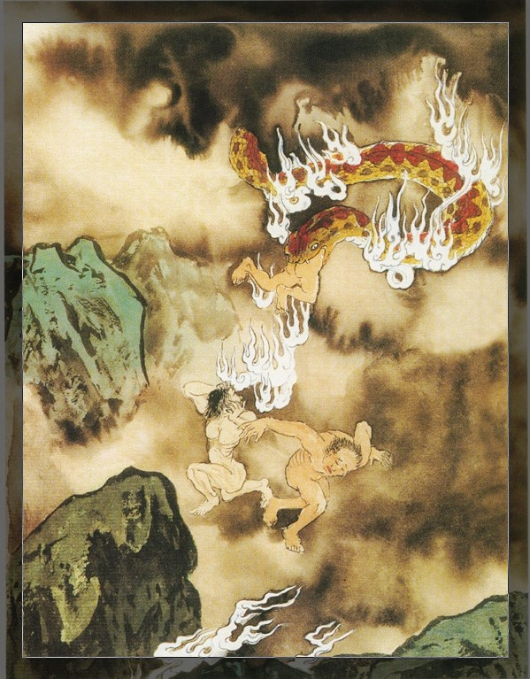

感恩佛力加被！乘白莲花出发！
“阿弥陀佛！阿玉向判官合十！”
“请问判官，阳人若说话用词非常过分，使用伤害人自尊的的种种言语，愤怒的辱骂人。家长打责孩子，夫妻吵架，说话处处不饶人，使用恶毒的言语咒骂，这些行为要堕落地狱受惩罚吗？”
判官回答说：“一个人若经常口出恶言，心怀愤怒，处处不饶人，使用恶毒的言语伤害人、辱骂人都算做恶口。例如骂人是畜生，或者骂人去死、骂人绝子绝孙、骂人死无葬身之地，甚至是对此人心中最看重的一些事而咒骂。例如某甲很希望生个儿子，可今生妻子身体已经无法生育，只有五个女儿，犯恶口者就故意用绝子绝孙，有钱有房子无人住给鬼住等等恶毒的语言去攻击某甲，令到某甲轻则心情欠佳，重者导致家庭不和甚至是犯婚外情，另寻第三者生儿子；若每个家庭不能融洽，就会造成社会动荡。目前有很多阳人因犯恶口导致他人无地自容、羞愧人生，甚至是轻生的都有。任何伤害到阳人身心灵的粗恶言语都属于犯恶口，尤其是种种极恶毒的语言。
犯恶口是要堕落地狱受刑罚的，恶口是一种不良习性的恶性循环。恶口于贪婪、愤怒、愚痴是同伴，所有犯恶口者都具备愤怒的共同点，只是每个犯恶口者的恶心及业力会深浅不一样。若对一位有修行证果的圣人犯一句恶口，足以令阳人堕落地狱受无量无边的种种痛苦；即使地狱报尽，亦流转畜生道受尽畜生的种种苦难，再生时亦为人下贱，直至恶口余报彻底消除。在这漫长的恶口业报成熟期，因过于苦难，又很容易再产生出一些新的业力出来，导致苦难更无有尽头，除非遇到真善知识的引导，发心修正自己的种种错误行为，行善积德，方有得度出离苦海的善因缘，否则真是苦海无边，万劫沉沦！
堕落地狱受刑罚的，有很多生前都是夫妻、朋友、同事、父母、兄弟姐妹大家彼此之间相处时犯恶口，夫妻之间是最多的，也是最容易犯恶口，女性占据的比例多些。在此本官奉劝各位女性要好好守住自己的口业，很多女性因自身黑业重，受往昔黑业的牵引，人生会遭遇到种种的身心困难；有的则在每个月生理不适时，必定犯种种恶口伤及身边人。
人的习性就是习惯性处在对自己有利益的角度去看待事物，只要稍有不顺，就容易升起抱怨身边一切人物、天地环境的种种不配合，错的永远不是自己，因此任由不良心情在剎那间起落而犯下种种恶口伤人。
要防止恶口，首先要保持心境的平和稳定；要保持平和稳定的心境则需先反躬自省，时时刻刻都想着自己是否有做错或者是用错言词的地方。在目前阳间社会风气不良动荡的时期中，的确是很难保持心境的平和稳定，外在的诱惑种种障碍实在太多，但即使艰难我们也要冲破障碍；若不冲破而犯下种种恶口，寿终堕落地狱，受苦的还是自己不是别人。
慈悲的佛在住世时，就预见了末法时期众生脱离苦海的种种障碍，大众很难提起正念修道修行，所以特意传下念佛一法，使大众容易得度。只需简单的念佛，每日不断念佛素食，仰仗佛力加被来潜移默化，慢慢净化我们的身心，保持每日心念的平静，将我们平时的负性妄念剎那转化成念佛的善念，由此念佛的善念养成良好的习惯，再将此良好的习惯来替代我们往昔的种种不良习惯，那么我们的命运亦将会慢慢改写，从而前途慢慢步向光明，便恢复我们先天的灵性光明。
犯恶口者身光最低限度会变成红色的，重者会由红色转为暗红色，若一直还不悔改不断犯恶口者，则会由暗红色慢慢转成黑色，黑色就已经是非常严重，会招感种种不如意事件发生。红色身光者已经人际关系欠佳，心情郁闷，容易发脾气。暗红色身光的众生最容易招感鬼道众生来接近，鬼道众生瞋恚心重，最容易生气。阳人只要一生气，马上就会有爱生气的鬼飞奔应召而来，再加上身边的一些灵界冤亲债主（每个人身边都会有一些，只是数目的多寡而已），他们会在生气的阳人旁边搧风点火。你只要生气，那个爱生气鬼就在旁边叫你更加生气，话说的更加过分更尖酸刻薄，令到阳人不由自主的无明火冒三千丈，那么恶口业力便一发不可收拾了。”
“感恩判官！您说的太好了，终于解开了我还未学佛前，跟家人相处不太和睦，总是莫名其妙的被骂被控制，而且每次都是突然家人变得很凶恶，令我非常害怕，这个害怕一直到我学佛之后才慢慢消散。”
判官说：“嗯！阿玉您的情况有部分是属于这种情况，另有部分是由于您那位家人是魔道投生来的，今生她只有一个目标就是障碍您修行，不让您从事维护正法的工作，您一定要以德报怨，精进修行，持守清净戒律来慢慢感化她；当她行为太激烈时，您可以适当的回避。正因为她种种激烈的行为，也无形中造就了阿玉您的一份于常人有别的坚强性格，您还是要感恩她不断的磨练您修行的坚固心，看您在困境中到底是否能保持住这解脱生死的坚固菩提心。”
“明白了，感恩判官的开示！阿玉一定会记住判官所教导的解决方法，以德报怨、精进修行持守戒律，慢慢感化家人，一定会付诸行动的。
“继续努力吧，阿玉！现在本官带您去参观恶口地狱，在“寒冰拔舌碎身地狱”的附近还有几个妄语地狱，温度是稍微有些提升的，没有这么冷，但也一样是痛苦万分；今天带您去妄语地狱区的第二部分，温度就不冷了。”
我们飞快的到了，当快要降落时，判官指着说，前面就是了。我低头一看，哦！有两条恐怖大头蛇蟠踞着，这蛇头太大了好吓人的，好在他们不会动，从未见过这么大头的蛇。一条暗红色的超级大头蛇及一条黑色超级大头蛇，他们的嘴巴张得大大。原来那条红色恐怖大头蛇蛇的嘴巴就是这个地狱的大门，在大门的旁边还有很多稍微小些的恐怖蛇，其实也不是小了，只是刚才那两条大，感觉门口这些小很多，有红色、有黑色，也有绿色的，这个地狱是用蛇的形象来建造。
大门上写着“毒蛇钉肠地狱”。哦！毒完之后还要被钉。夜叉向判官行礼后，开门带我们进去，还没有进去之前已经听到十分恐怖的声音，“嗤嗤，啊啊，咔嚓”声，像是咬断东西了，悠长哀怨的风声，感觉上这里发出的恐怖声音多且杂乱，全部混合一起变得极度吵耳，听的耳朵难受。我们进入恐怖大头蛇的大嘴巴里，有个夜叉吩咐我不要太靠近里面，就站在旁边参观，说里面有很多机关。这个地狱也是有很多电脑，凶恶的夜叉们都在忙碌着，快速地操作众多的电脑来惩罚众罪灵们，看来这里明显工作人员不够用，夜叉们的动作都很快速熟练的在操作电脑。若没有电脑帮忙，夜叉们肯定更加忙碌；这里果然如判官刚才所说，恶口地狱以女罪灵居多。来到这个地狱感觉头部及心理压力特别大，头痛及内心有说不出的难受，继续参观吧！看到苦难的罪灵们，我这些又简直不值一提了。
这里有很多罪灵，都在被电脑里的暗红色毒蛇飞出来咬她们的嘴巴及舌头，每部电脑都会发出恐怖的声音，难听之极。当罪灵被毒蛇咬嘴巴及舌头时，就全身中毒发黑发紫，痛苦倒地；有的会大叫，有的不会出声只是倒地昏死，此时毒蛇会对着罪灵的耳朵发出种种恐怖声音将他们弄醒。当罪灵醒过来，地上立刻飞出一些尖形的火红炽热钩子扣住他们两个耳朵，罪灵的耳朵随着“嗤嗤嗤”的声音立即被融化掉了。在此同时，毒蛇继续将罪灵的舌头及肠子都拉出来丢在地上，之后电脑会涌出一些冒烟的滚水将罪灵的舌头及肠子烫熟，直至舌头肠子变得很小，但也有电脑会飞出一些硬冰块将罪灵的舌头及肠子砸得碎烂血花四溅。
当罪灵的舌头及肠子被滚水烫熟及被硬冰块砸碎之后，电脑便飞出一些两头尖的小铁钉，密密麻麻的钉在罪灵的舌头及肠子上，此时毒蛇会将罪灵的舌头及肠子咬住，全部塞回罪灵的嘴巴里令他们痛苦大叫，在地上滚动呻吟；这样罪灵们如是不断循环受罪，无有休息。
这个恶口地狱的刑罚是属于极度高速的，使人看得眼花撩乱，用文字说明还是相当有限，总之阿玉尽量多表达一些让大家知道，现场参观的其实还有太多刑罚，因时间关系无法一一描述了。
此时，有个女罪灵突然朝着我的方向使劲地跪下叩头，夜叉是肯定不会放过她了，被夜叉凶恶的踢回电脑旁边去了。哎！地狱真是惨无人道啊！女罪灵真可怜啊！这时判官吩咐夜叉把那位女罪灵带过来让我访问写文章，夜叉将女罪灵提了过来。
女罪灵跪在我面前说：“小玉子救我，小玉子救我，小玉子救我，您一定是小玉子了！”小玉子这小名是我小时候在奶奶家住大家习惯性叫的，我已经离开那城市20多年了，眼前这女子是谁呢？肯定是小时候的邻居。
我当时愣住了说：“对不起！我们以前肯定见过，您是我奶奶的朋友吗？已经有太长时间没有听过长辈这样叫我了，请问您是如何来到这里的？”
奶奶的往生，已经将这小名给彻底带走了，没想到今天竟然会在地狱再次听到有人如此叫我；前尘影事，彷佛时光倒流，一剎悲哀突然涌到心上。
女罪灵说：“小玉子！您不记得我很正常，我跟您奶奶很少交往，我们住的距离不远，但我的家是大家的必经之路，您小时候总喜欢蹦蹦跳跳的走路；只要是您经过，一听脚步声我就知道；您经常走过我家时，我都在客厅做事，会看到您的侧面。那个时候，我的两个女儿总是会问：为什么小玉子可以每天玩，而我们就要每天不停的干很多的家务？而我却恶口的骂女儿们：“谁叫你们天生贱骨头贱命，生在穷人家住小房子，都是些短命鬼。你们又不争气，生为女孩；如果你们是男孩，我每天让你们出去玩，还不快给我去干活。这有什么好羡慕的，小玉子不就是家里多几个臭钱，房子大有什么用，都没人住。尽管她每天玩，又有什么了不起的，还不是跟你们一样是个短命鬼，又不会变成男孩。”
“您奶奶是我们那里出名的老实人，乐于助人，只要她有的东西一定会借给大家用，不还也可以。可是自媳妇陆续进门后，您奶奶要背着媳妇借东西给大家，否则被媳妇骂，她受尽媳妇的种种欺凌。那个时候，我总是想您奶奶就是因为老实才长期被家中几个媳妇欺负，因此我要更加凶一些，不能让任何人欺负我。您奶奶说自从您出生后她开心了很多，她还经常会说您的刚强，特别男孩性格给大家听。我刚才是凭着您的侧面突然感觉出来您就是小玉子了，您还记得20年前在家乡有个媳妇咬断婆婆手指的事吗？”
阿玉：“啊！我想起来了，原来您就是那位阿姨啊！这件事太出名了，是听说过，但不知道是谁。那个时候我还小不懂大人的事，听奶奶说您们婆媳不和，好像是您的婆婆想抱孙子，可是您却偏偏一连生了两朵金花，还听说您们婆媳好像经常吵架。但阿姨您年龄也不是很大，怎么那么快就来到地狱了？”
女罪灵伤心哭着说：“我生前因脾气极坏，每天都恶口骂人，任何人我都会骂，只要稍微有些不合意的，必定被我大声的，以一些尖酸刻薄的言语怒骂。就算是天气不好，影响了我要做的事情，我都会骂该死的臭天，下这倒霉的雨，烦死人了，婆婆女儿更是每天被我骂。您在家乡时，我刚嫁过来不久婆婆还年轻，都被我咬断手指。之后我因无法再生育，心情脾气更加差，婆婆自然不是我对手，我每天骂她老不死的。当她要出去时，我就会骂她老妓女、老妖婆你出去找男人，死在外面我不帮你收尸，婆婆总是气的回骂几句才出去，她每次都输给我，我一定赢她。有时婆婆被我打的头破血流，咬断手指是我刚嫁过来时给她的一个下马威。
我是肝炎病死在家中的，牛头马面将我拖到地狱来，阎王大怒，说我生前恶口伤人，打骂婆婆，怒骂天地，乃犯不孝、不义、不廉、不耻、不礼、不敬，判我进入毒蛇钉肠地狱受罪400年，我感觉在这里已经过了很长很长的时间，这里实在无比痛苦之极了！我生前一直以为只要大声凶恶些就能压倒身边的人，我现在终于知道错了，“唔唔唔”，实在太痛苦了！
小玉子呀！您怎么会来到地狱的呀？求求您，救我出去吧！”
此时夜叉凶恶的大声说：“不准再说废话，马上回去受刑，人家阿玉正忙着来地狱参观，要写书度化世人，没时间听你说废话，还不快滚开。”夜叉的叉子马上打过去了。
我心中一阵难受，判官见我神色悲哀，就叫住夜叉让罪灵再继续说一会吧！看看罪灵还想说些什么。
女罪灵身体发抖很痛苦的哭着说：“小玉子呀！您能带着我一起写书吗？在我们家乡大家都知道，您从小就在奶奶的熏陶教育下，具备了喜爱帮助人的性格，我相信小玉子您一定会救我的，您一定不会见死不救的。我们虽然很少交往，但也算是曾经做过邻居，您就带着我一起来写书劝化世人不要恶口，我一定为您做证明，我是如何犯种种恶口堕落地狱受苦的，我会帮助您劝导大家不要恶口，求求您救我出去吧！”
“阿姨，阿弥陀佛！看见您堕落地狱，真是十分难过，我也很希望尽快救您出去，可是我不具备带您出去的力量，我是仰仗佛的加持力来到地狱参观撰写《阴律无情》一书；至于写书的人选是佛安排的，我也无权私自安排此事。我是持守五戒、念佛、清净素食的佛家弟子，阿姨您也开始发心念佛忏悔吧！我一定会将写书的功德，回向阿姨早日离苦得乐超升净土，莲花化生。我试试帮您向这位判官大人求情，希望能帮到您！”
这时女罪灵说：“求求判官，求求判官，我给您叩头了，我该死！我该死！生前没有做过任何好事，现在很希望可以像小玉子一样为大众做些好事，求求您，我真的知道错了！”
判官说：“你生前恶口伤人，打骂辱骂婆婆乃犯阴法之大不孝，阴律是惩奸罚恶的，只要做了堕落地狱的恶业，地狱的阴法就会牢牢的把你扣住，直到恶业全部消磨掉，才可出离地狱。冥府阴律的法规是不会因你认识这里任何工作人员，而凭着一份人情减轻刑罚，即使是父子至亲也无任何亲情可言。任何触犯冥府阴律的法规者都必须受到惩罚，即使所伤害到的受害人肯原谅你，即使你婆婆不追究任何责任，原谅你的不孝，阴律的公平公正也是不会放过你的。冥府的阴律因果法则是会等你阳寿福报尽后，牛头马面无情的将你带来地狱受罚。现在你暂时升起悔过之心，本官亦通晓。念你今天亦非常合作，我会吩咐夜叉帮你记录曾经合作悔过一次等同于在地府听法一次的记录。由于你生前不孝顺，现在招感到后人没有如理如法的行善积德回向给你。你跟阿玉之间亦是往昔做过远房亲戚的因缘成熟，导致有今天相聚一时之机会，望你好自珍惜无常之善缘。
冥府亦有给真心悔过者机会听法解脱的。但先决条件必须靠你自己的忏悔心念，升起到一定的光亮，夜叉看见后自然会带你去听地藏菩萨讲法。这个听法的殊胜因缘亦是人人平等，只要你发真心忏悔到一定时日，自然会招感夜叉来暂停刑罚，带你去听法。每次听法冥府的夜叉都会有记录，每听一次你的灵性亦会被地藏菩萨的慈悲法音洗刷善化加持一次，目前你的忏悔心光并不足够，先回去好好消磨业力。”
夜叉又再度凶恶的对女罪灵说：“今天便宜你了！遇到判官来跟你解释那么多道理，快滚回去受罚吧！”又是一脚踢了过去。哎哟！夜叉啊！夜叉啊！总是那么凶、那么粗鲁！这里每个夜叉都是凶吧吧的！哎！千万不要堕落来地狱受罪，处处都是凄惨兮兮！
这时判官继续说：“阳人若曾经犯有恶口者，现在看见此文章后，又想免除堕落地狱受苦者，可以在生前忏悔此恶口业力，当然要看恶口业力的严重性，是否有伤害到阳人的性命等等；即使是严重的，经过忏悔还是会大有改善；若是一些普通的恶口业力，是可以在寿终前忏悔清净的。忏悔的方法跟昨天说犯妄语时是一样的，只是将犯妄语改成犯恶口就行了。例如：我某某人在何时何地曾经恶口某某事件，如此将妄语更改成恶口就行了。
记住！一定要真心忏悔！这个很重要，一念真心通达三世，一念真心足以消磨无量恶业，一念真心直通天地阴律法则！将此《阴律无情》书中真心忏悔之法转载相告，必定可消去往昔恶业。冥府有每位阳人的种种善恶详细记录，莫以善小不为之，大福报其实就是从小善小行及精细的严格持守戒律而来的。请记住
，并非看了此文章忏悔完后，心里想着有此忏悔法，可以任意妄为，又再次作恶，再次不断忏悔，反反复覆明知故犯，明知故犯者罪加一等！
阿玉！恶口地狱今天就参观到此吧！欢迎您再安排时间来！我也要先忙公事。”
“
阿玉向判官行礼！今天非常感恩判官您帮忙那位阿姨了。”
判官说：“无需客气！在我们心中每个罪灵都是平等的；我们冥府都希望所有罪灵尽早离开地狱，而且帮助您写书也是我责任，目标也是为免更多阳人寿终堕落地狱受苦，其实还是在减轻我们冥府的工作量，我还要感恩阿玉您呢！最好您多些来，尽快出书，将地狱的种种苦难呈现在阳间，感化阳人持戒念佛行善，切不可辜负佛恩、辜负玉帝及众阎王此番泄尽天机，为了救度阳间众生，公开冥府阴曹及地狱种种刑罚的真相。现今阳间众生作恶，不信因果，恣意妄为，邪淫杀生，偷盗妄语，几乎已经到达不可收拾的地步，严重干犯上苍，扰乱天地正气平衡。《阴律无情》一书的出现，是希望挽救一部分虽曾作恶，但良知仍未泯灭者脱离苦海。”
“好吧！您快回去写文章，本官先忙！”
“
阿弥陀佛！感恩慈悲的判官在百忙中给予的帮助，阿玉合十感恩！”
乘白莲花回家！
转载自阴律无情官方网站
http://blog.sina.com.cn/u/2163451163
加载中，请稍候......
 加载中…
加载中…